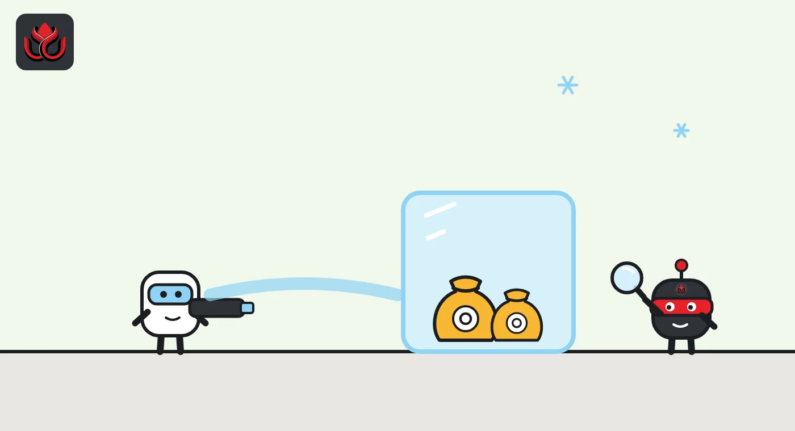
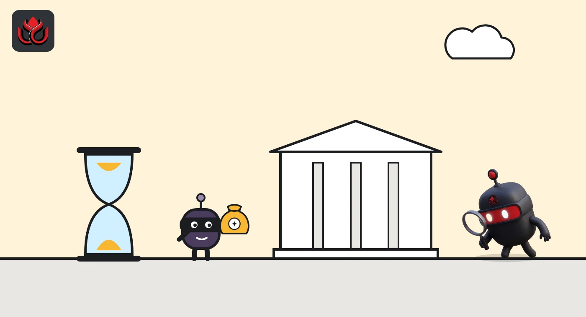

One address, two exchange hacks: DeepSea traces where this fall's stolen crypto went
DeepSea says funds from the Bitget and Binance thefts landed at the same address. Its tracker also shows how little of the loot has reached exchanges, and how much is simply sitting still.
Key points
- DeepSea says funds from the September 24 Bitget theft and the October 29 Binance theft reached the same address, linking the cases on-chain.
- Only small sums are shown reaching exchanges, such as $5.43 million of Bitget funds at a Binance deposit address. Large amounts are parked: about 195,000 ETH from Binance and 92.51 BTC from the Ledger drain.
- Binance says about $3 billion has been frozen and it will cover all losses. Neither Binance nor Bitget has named an attacker in the statements we read.
 What DeepSea's data shows
What DeepSea's data shows
DeepSea's Hacks list shows four thefts from September to October 2026 with dollar totals: Binance at $3.40 billion, Bitget at $387.50 million, the Ledger CryptoBilis drain at $86.96 million and the D'CENT app wallet drain at $20.00 million. All four are DeepSea's own estimates.
The standout finding sits on DeepSea's Binance page. DeepSea reports that funds from the October 29 Binance theft and from September's Bitget exploit were sent to the same address, which it shows as 0x15104a…e0feb7, and says this links the two cases on-chain. Neither exchange has commented on that link in the statements we read.
Very little of the stolen money is shown reaching exchanges. For Bitget, DeepSea's tracker shows $5.43 million sent to a Binance deposit address. For the Binance theft, DeepSea shows about 195,000 ETH parked in one wallet that has not spent it, and says the attacker still controls more than 420,000 ETH and 18,270 BTC. For the Ledger drain, DeepSea shows 92.51 BTC still in the attacker wallet.

Data: DeepSea (desea.io), checked November 1, 2026, 11:38 p.m. ET.
What happened
Funds stolen from Bitget in September and from Binance in October were sent to the same address, according to on-chain analytics platform DeepSea. By the exchanges' own counts, the two thefts cost about $388 million and about $6.3 billion.
On September 24, Bitget says, unauthorized transfers began leaving its hot and warm wallets at 2:31 p.m. ET. Its final verified loss spans 12 wallet addresses. Bitget says asset recovery is ongoing and that some funds have been frozen with help from other exchanges and security firms, without giving an amount.
On October 29 at about 4:05 p.m. ET, Binance's hot wallets were compromised. In its October 30 recovery update, Binance said about $3 billion had been frozen on-chain. Its co-chief executives wrote: "Binance will absorb the financial impact of these stolen funds, not our users."
Hackers usually split stolen coins across many wallets, swap and bridge them, then try to cash out at an exchange or over-the-counter desk. That last step is where funds can still be frozen. DeepSea follows these paths and labels the wallets involved.
Binance: frozen dollars, parked ether
DeepSea's figures for Binance differ from the exchange's own. DeepSea counts about $3.3 billion to $3.5 billion leaving Binance wallets on Ethereum, and says higher totals include Bitcoin and Tron outflows it has not linked to the attacker. Its page still says Binance had not confirmed a hack, although Binance's October 30 update did. We use Binance's figures for the loss and DeepSea's for the money trail.
According to DeepSea, issuers froze more than 1.5 billion USDT, about 800 million USDC, 40.5 million RLUSD and 27.8 million USD1, plus about 8,426 ETH and 74.6 million ARB on Arbitrum. About 700 million USDT left two wallets before they were blacklisted. Of the rest, DeepSea's tracker shows $66.59 million swapped, 92% of it into ETH, and funds split across 133 wallets. The last movement was 39 hours before our check.
No issuer can freeze ether, and that is where most of the remaining value sits. DeepSea shows about 195,000 ETH in one holding wallet that has not spent it, and more than 420,000 ETH and 18,270 BTC under the attacker's control overall. It does not show Binance hack funds reaching another exchange.

Bitget: slow, careful laundering
The Bitget trail is older and more spread out. DeepSea shows the funds split across 1,870 wallets up to four hops from the first attacker wallet, with $129.18 million swapped, mostly into the dollar tokens USDS and DAI. About $11.06 million left for other chains through bridges and swap services, including $4.26 million through THORChain.
DeepSea's exchange numbers for Bitget need care. Its headline says $10.9K sent to exchanges, while its written summary says $33.17 million. Most of that larger figure went to Spark, a lending protocol ($26.40 million), and to Ethereum staking deposits ($1.33 million), which are not exchanges. Only $5.43 million went to a Binance deposit address.
DeepSea's weekly report for October 5 to 11 separately counts 376 exchange deposits worth $4.71 million from the Bitget hack in that week. The tracked wallets last moved about 16 days before our check.
Two wallet drains and a data conflict
Two wallet drains round out DeepSea's list for the season. The Ledger CryptoBilis case, at $86.96 million, shows 92.51 BTC unmoved in the attacker wallet, although the same page says funds were split across 400 wallets. The D'CENT drain, at $20.00 million, involved about 11.7 million XRP taken from September 15 to 20. DeepSea says a large share was swapped to ETH and the rest sent to exchanges and instant-swap services, without giving a split.
DeepSea's weekly reports also total tainted exchange deposits: $112.12 million from October 5 to 11 and $355.31 million from October 12 to 18. Almost all of it is attributed to a fake FomoPeek app, but DeepSea's own pages disagree. The FomoPeek page's headline says $1.03 million reached exchanges and its summary says $20.55 million, while the weekly reports add up to about $449 million, with dates a month apart. We could not reconcile them, so we leave those totals out of our analysis.
Stolen totals on DeepSea's Hacks list, fall 2026
US$ million
Source: DeepSea Hacks list, checked November 1, 2026, 11:22 p.m. ET.

Who is behind it
DeepSea's Binance page says several analytics firms link that theft, with high confidence, to the North Korea-linked group behind the February 2025 Bybit hack. That is DeepSea's summary of third-party views, not an official finding. Binance's October 30 update names no attacker and says it is working with law enforcement.
DeepSea's Bitget page says Bitget and blockchain investigators link that attack to North Korea-linked groups, with no official US finding yet. But Bitget's own incident page, last updated on October 13, calls it a highly sophisticated targeted attack and names no attacker.
The shared address DeepSea flags is an on-chain link between the two cases, not proof of who controls it.
LC Insight analysis
This section is our reading of the facts above, not a statement of fact.
- The shared address is the most important lead in DeepSea's data. If investigators confirm it, the Bitget and Binance thefts would be one campaign worth more than $6.6 billion by the companies' own figures, and recovery work on one case could help the other.
- The pattern is clear across the trackers: stablecoins get frozen fast, while ETH and BTC get parked and wait. Expect a long tail of slow cash-outs over months, so exchanges will need to keep watching these wallets well after the headlines fade.
- DeepSea's trackers are a useful map, but its own pages disagree in places, from Bitget's exchange totals to FomoPeek's size. Treat the figures as live estimates, not audited numbers.
What's next
- Any movement from the roughly 195,000 ETH wallet tied to the Binance theft
- Binance's promised technical postmortem and any official attribution
- Whether Bitget publishes how much has been frozen or recovered
- New exchange deposits from the shared address DeepSea flags
Disclaimer. This article is based on public information and the sources listed below as of the update time shown. It is for information only and is not investment, legal or tax advice. Figures may change as companies and authorities publish new data.
Sources
- DeepSea, Hacks: Binance hot wallets (checked November 2, 2026)
- DeepSea, Hacks: Bitget (checked November 2, 2026)
- DeepSea, Hacks: Ledger CryptoBilis drain (checked November 2, 2026)
- DeepSea, Hacks: D'CENT app wallet drain (checked November 2, 2026)
- DeepSea, Weekly Smart Money & Global Money Flows Report, October 5 to 11, 2026
- Binance on X, Security Incident Recovery Update #2 (October 30, 2026)
- Bitget, Security incident page (last updated October 13, 2026)